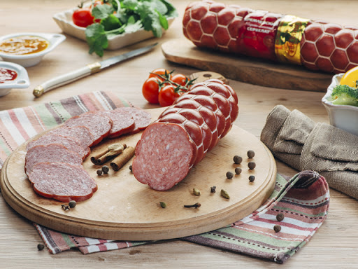
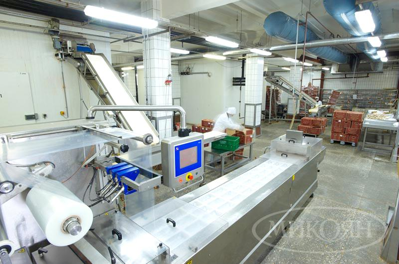

<div class="container"><div class="info"><div class="infoBlock"><p class="infoBlock__text">Оригинальные вкусовые качества, свежесть и натуральность используемых ингредиентов, запоминающийся вид и удобство упаковки, способность продукции к длительному хранению — вот, что характеризует нашу продукцию на протяжении всей истории работы предприятия.</p></div><div class="infoBlock"><p class="infoBlock__text">Микояновский мясокомбинат является старейшим мясоперерабатывающим предприятием страны, его история насчитывает более 210 лет. Первое упоминания о том, что на месте современных микояновских корпусов когда-то располагались мясницкие бойни, относятся к 1798 году.</p></div><div class="infoBlock infoBlock_big"><div class="infoBlock_big__imgs"></div><p class="infoBlock_big__text infoBlock__text">Главной целью любого производства является получение высококачественной продукции с конкурентноспособной ценой. Чтобы достичь такого результата, важно располагать современным технологическим оборудованием самых последних разработок от зарекомендовавших себя, ведущих мировых брендов.</p><div class="infoBlock_big__btn"> <p>Узнать подробнее</p></div></div></div></div>